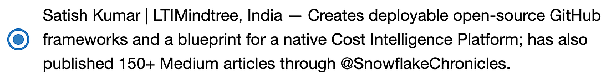

Snowflake Community Awards · 2026 Finalist
Open Source Impact, APJ Finalist
Satish Kumar · LTIMindtree, India
"Honors the individual or group whose open-source contributions serve as a force multiplier — the tools, frameworks, and libraries that empower the community to build faster and solve complex data challenges." — Open Source Impact, Snowflake Community AwardsVote Now →
09Days
00Hours
00Min
00Sec
Voting closes Sep 15, 2026
How to vote for Satish Kumar — Open Source Impact (APJ)
- Step 1: Access & VerifyOpen the voting form and enter your email address.
- Step 2: Navigate to APJ CategoryClick Next until you reach Page 6 of 7 (Open Source Impact → APJ).
Then
-
Step 3: Select CandidateLocate and select the radio button for Satish Kumar | LTIMindtree, India.

This is exactly what you're looking for on the Community Voting Form
- Step 4: Submit VoteClick Next and hit Submit to finalize.
Blocked on your work network? Scan the QR from a personal device, or watch the how-to video.